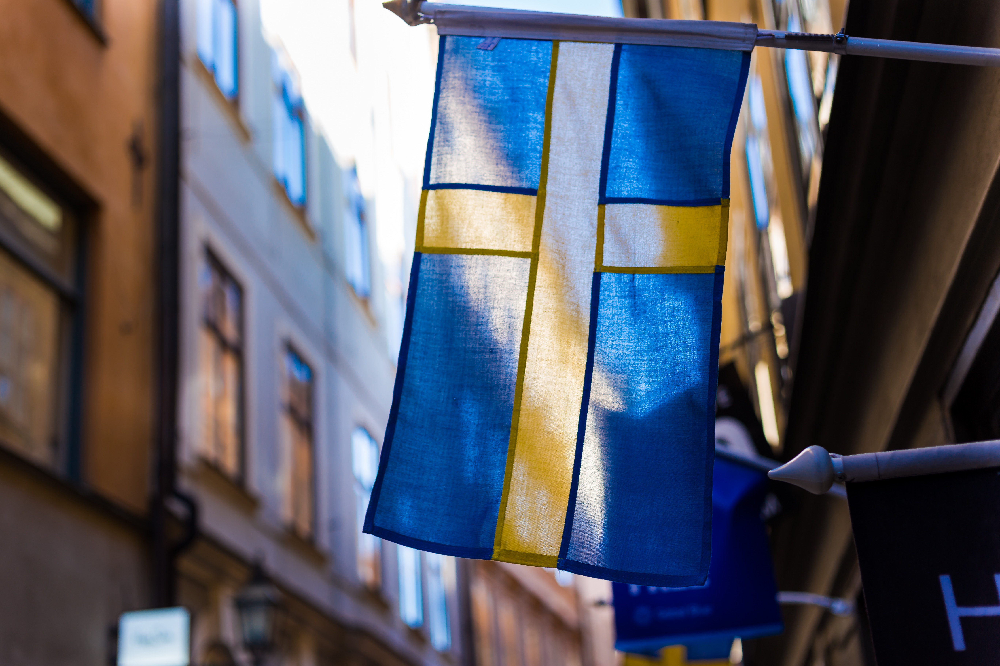
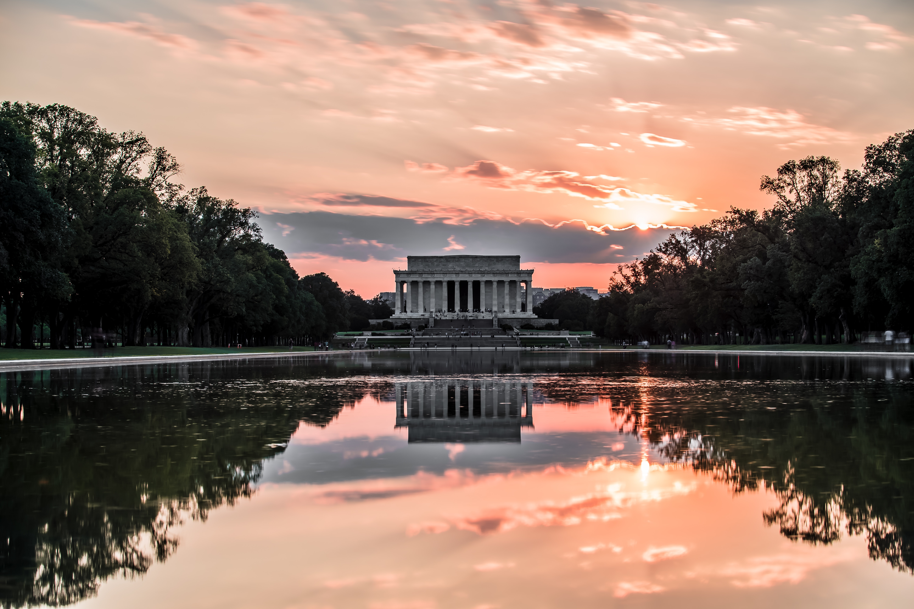

Sweden

France
My family loves to travel. Our adventure really started in 2007, and since then we have gone to 4 different countries and 6 states (numbers keep growing!)
In september of 2012, 3 of us went to Europe for the first time (at least for my brother and I). We met up with my grandmother and uncle in Paris and spent 5 days there. We went to a bunch of museums and tourist spots. That weekend we hopped over to Stockholm, Sweden, for my mom's cousin's wedding. It was a beautiful and exciting wedding. We got to see a bit of the viking side of Sweden too while exploring. The whole family was there!
In 2013, we started our family tradition of visiting DC every Memorial Day weekend. It's impossible to see everything in just 3 days which is why we kept coming back. About 3 years later though, we had our fair share of DC and adventured elsewhere.
Our new tradition spawned in 2015 when we left the mainland over to Puerto Rico. The island was very small! However, it was full of adventure. We drove ATVs through the rough terrain, not a single building in sight. The ocean on one side, and never ending stones and hills on the other.
We are American citizens now! Which means we can go anywhere! (We went to Sweden on a technicality). That Christmas, we went to Aruba. It was great because the island is only a 30 minute flight from Venezuela, so our family was able to meet us there. We hadn't seen them in quite a while. The water was so clear! We went snorkling by a small island off the main island. It was all very relaxing.
A month before graduating high school, my parents' graduation gift for me was a trip to... anywhere I wanted... with my best friend! We settled on Madrid, and spent a little less than a week there. We walked A LOT. We saw a bullfight! We visited Segova, a decent train ride away from Madrid, and ate very delicious food. We also have some family and friends there so we got to see them too.
The year is not over and neither are my adventures! This fall I will be living abroad in Hong Kong for almost three months. However, I am not coming straight back to the US. It looks like there will be one more stop at the end of the semester... we'll see!